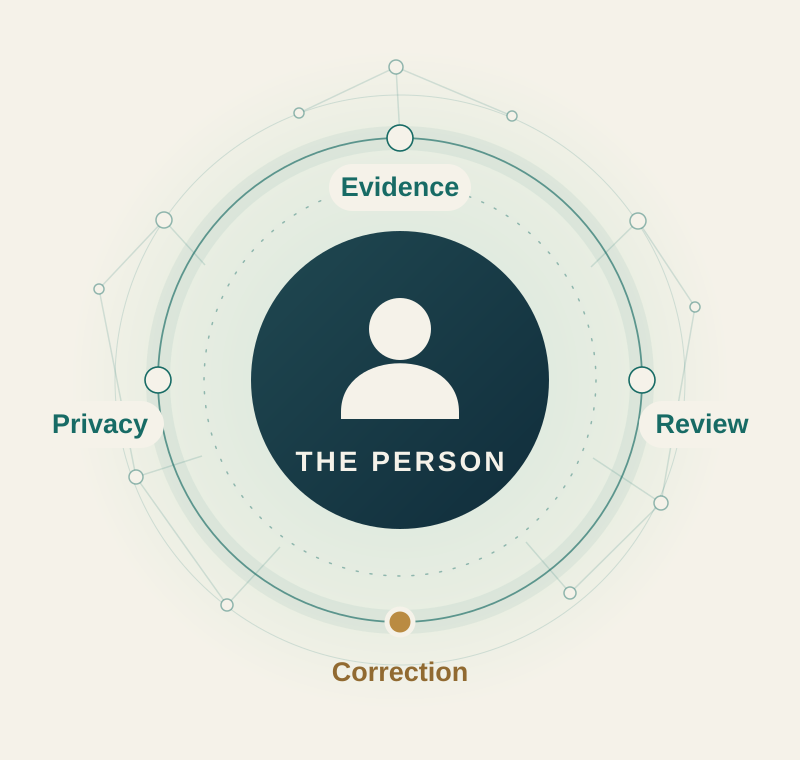
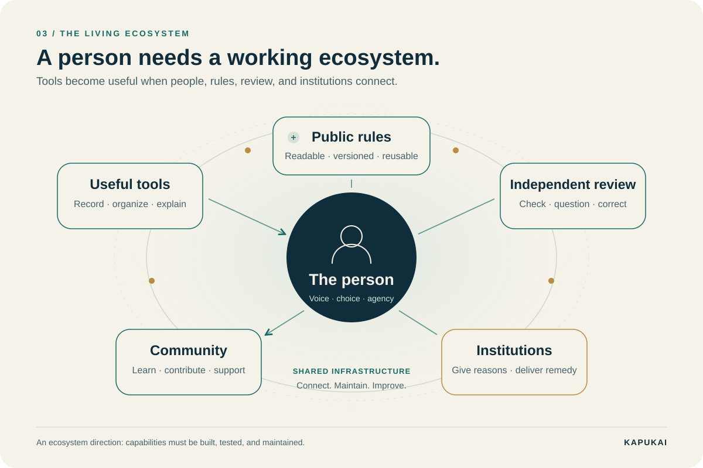
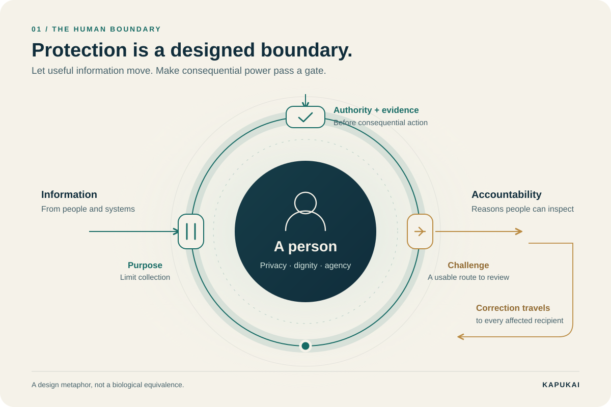
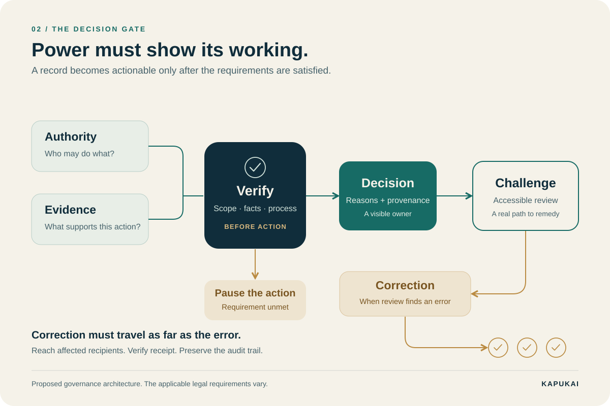

Exposed
Information leaves the person without meaningful control. Harm can travel farther than a correction.
CONNECTION WITHOUT PROTECTIONTHE NEXT ARCHITECTURE OF GOVERNANCE
A decision changes your life. Can you see who made it, what authorized it, what evidence they used, and how to correct it?
The next evolution starts with that question.

Privacy for people.Transparency for power.A path to correction.
01 / BORROW A PATTERN FROM LIFE
Cell membranes hold living systems together while regulating exchange. Governance can borrow the design question: what should cross a boundary, under whose authority, and with what protection?
Information leaves the person without meaningful control. Harm can travel farther than a correction.
CONNECTION WITHOUT PROTECTIONThe institution protects itself. The person cannot see the reasons, reach a reviewer, or obtain a remedy.
PROTECTION WITHOUT ACCOUNTABILITYPeople have privacy. Decisions have reasons. Every consequential gate has a route to review and correction.
PROTECTION WITH RESPONSIBILITYThe analogy has a boundary, too. Fatty-acid vesicles are a studied model of early cell membranes. Human institutions do not follow a proven chemical law. This is a design lens, not proof that any political future is inevitable. Source 1
02 / FROM A BOUNDARY TO AN ECOSYSTEM
People need both connection and protection. As our ways of coordinating expand, the safeguards around each person must remain visible and usable.
A voice. A private life. The ability to understand and challenge what happens to them.
THE HUMAN FOUNDATIONPeople delegate power to organize shared work. Authority needs a defined purpose and limits.
SHARED RESPONSIBILITYOpen tools and shared records let communities coordinate across organizational boundaries.
CONNECTED CAPACITYPeople, institutions, and technology work through inspectable decisions and verified correction.
THE DIRECTION WE PROPOSEFour scales of cooperation, not a fixed historical sequence. DAOs are one possible organizational tool within this ecosystem.
03 / MAKE THE GATE VISIBLE
Imagine a public service is denied because of a record. An accountable process should make the basis of that decision inspectable and give the affected person a way to challenge it.
ILLUSTRATIVE DESIGN • NO PERSONAL DATA
Select the safeguards present in this example.
Record incomplete
Identify the authority, link the evidence, and make review reachable.
This demonstration evaluates a proposed record structure. It does not verify evidence, authorize a real decision, determine legal compliance, or move funds. *Public reporting must be redacted and subject to applicable privacy and disclosure rules.
A revised source record is only the start. A complete remedy identifies affected recipients, sends the correction, and confirms what changed.
04 / MANY PARTS. ONE HUMAN PURPOSE.
A diagram helps us see the whole. A working ecosystem gives each part a responsibility, an interface, and a way to know whether it helped.

State what happened in your own words. Choose what to share. Find support without surrendering control of your whole story.
Reusable diagrams and versioned rules make the process easier to understand, compare, teach, and improve. Every rule should point to its source.
Connect a statement to its source and preserve uncertainty. Separate private evidence from public accountability information.
Make someone responsible for hearing a challenge. Disclose conflicts, explain findings, and preserve a route to reconsideration.
Identify the authority for a decision, communicate the reasons, and respond to verified errors through the appropriate legal process.
Cooperatives, civic networks, and DAOs can organize shared work. Their design still needs fair participation, clear responsibilities, and accountable controls.
05 / WHERE DAOs FIT
A decentralized autonomous organization, or DAO, uses shared governance processes and blockchain-based tools to coordinate a group. It is one option to explore, not a guarantee of justice.
| Technology can support | Accountability still requires |
|---|---|
| A shared transaction historyRecords that are harder to alter unnoticed | Reliable evidence about what happened in the real world |
| Rules executed by softwareDefined steps and conditions | Security review, transparent amendments, and correction when rules fail |
| Collective decisionsParticipation across a network | Fair representation and protection against concentrated control |
| Conditional resource releasePayments linked to defined criteria | Lawful authority, reviewed findings, appeal, and continuity of essential services |
A ledger can preserve a claim without proving it true. DAOs can be subject to law. Public funding cannot simply be redirected by code. Read the sources ↓
A QUESTION TO RESEARCH
Kapukai proposes exploring lawful, clearly defined funding conditions tied to reviewable findings and completed correction. That requires policy design, legal authority, independent oversight, and protection for the people who rely on essential services.
RESEARCH DIRECTION • NO LIVE FUNDING SYSTEM
06 / A LIBRARY PEOPLE CAN USE
Three reusable visual models for classrooms, conversations, and design reviews. Download an editable SVG or a presentation-ready PNG.

PATTERN 01
Protect personal life. Make consequential exchanges accountable.

PATTERN 02
Link authority, evidence, review, and downstream correction.
PATTERN 03
Give every participant a useful role around the person.
This page presents Kapukai’s design proposal. It does not claim that DAOs inevitably replace government, that code is incorruptible, or that this proposed ecosystem is already operating. Biological images are explanatory models, not scientific illustrations of a specific cell.
Research on fatty-acid membranes as models for early protocells; the historical origins of life remain an active research question.
Distributed ledgers can resist and reveal tampering under their operating assumptions. That property does not establish the truth of a recorded claim.
Smart contracts require additional systems to receive real-world information; the quality of those inputs remains an essential design problem.
A concrete example of legal liability involving a DAO. Decentralization does not automatically remove legal obligations.
Federal Treasury spending requires appropriations made by law. Software cannot independently replace that authority.
Federal funding conditions are subject to legal constraints. Any proposed public funding mechanism needs context-specific legal analysis.
Editorial version 1.0 · October 18, 2026. No analytics, case intake, wallet connection, or funding transaction is part of this page.